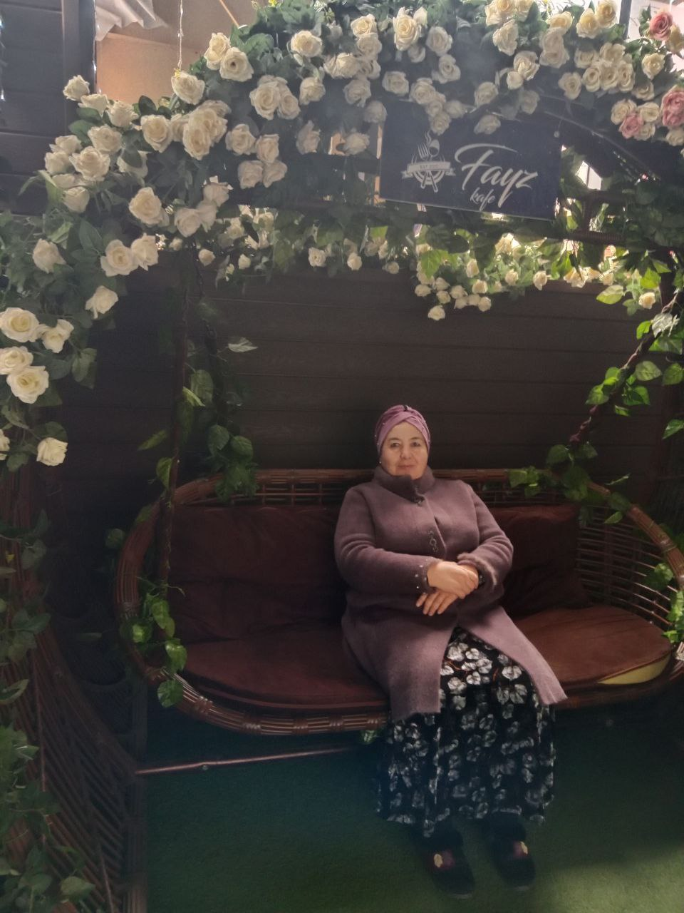
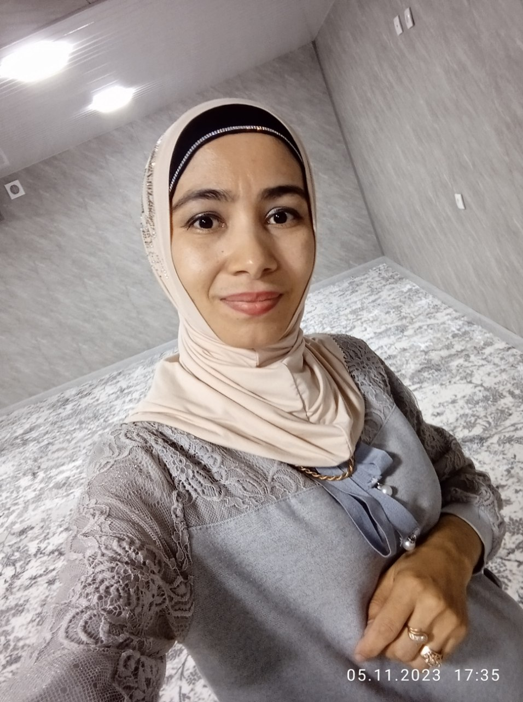
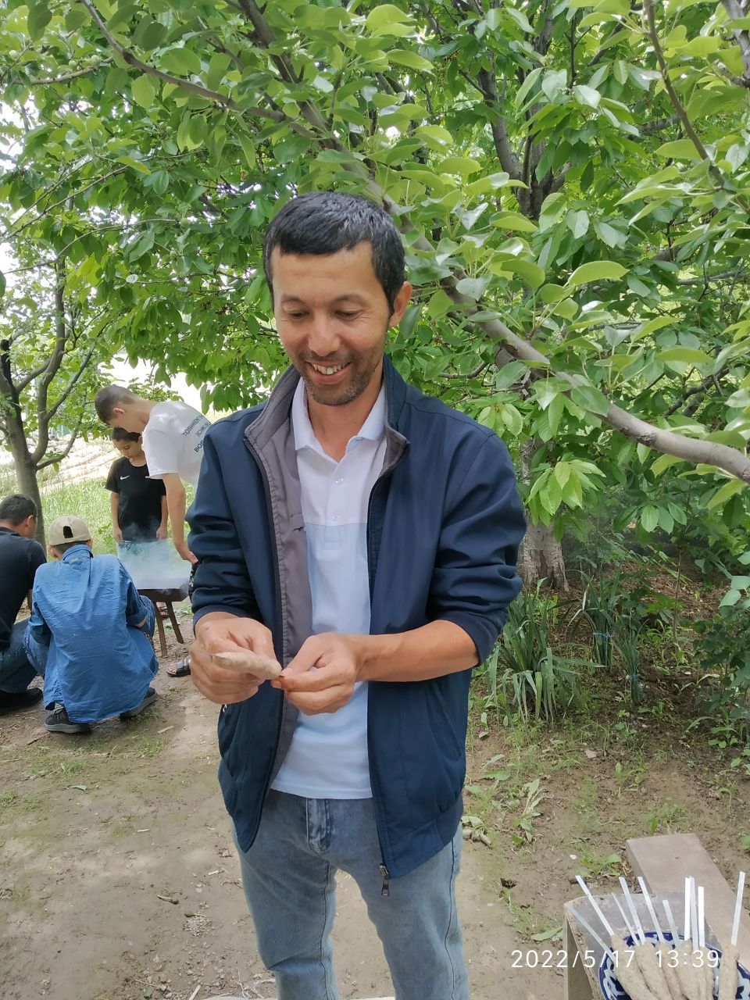
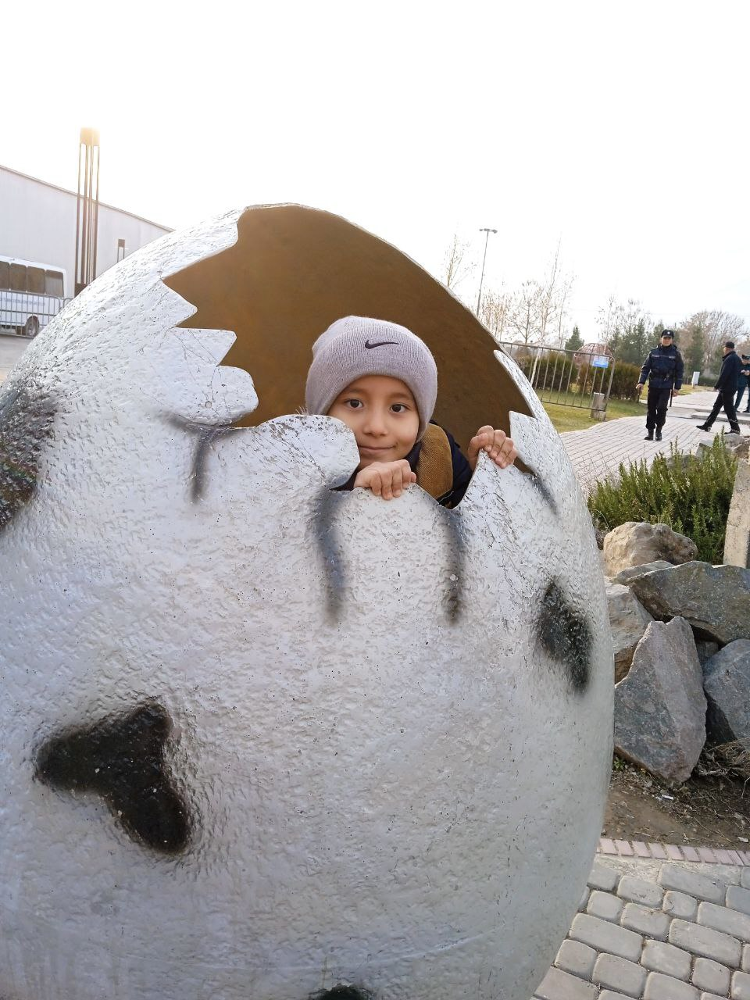
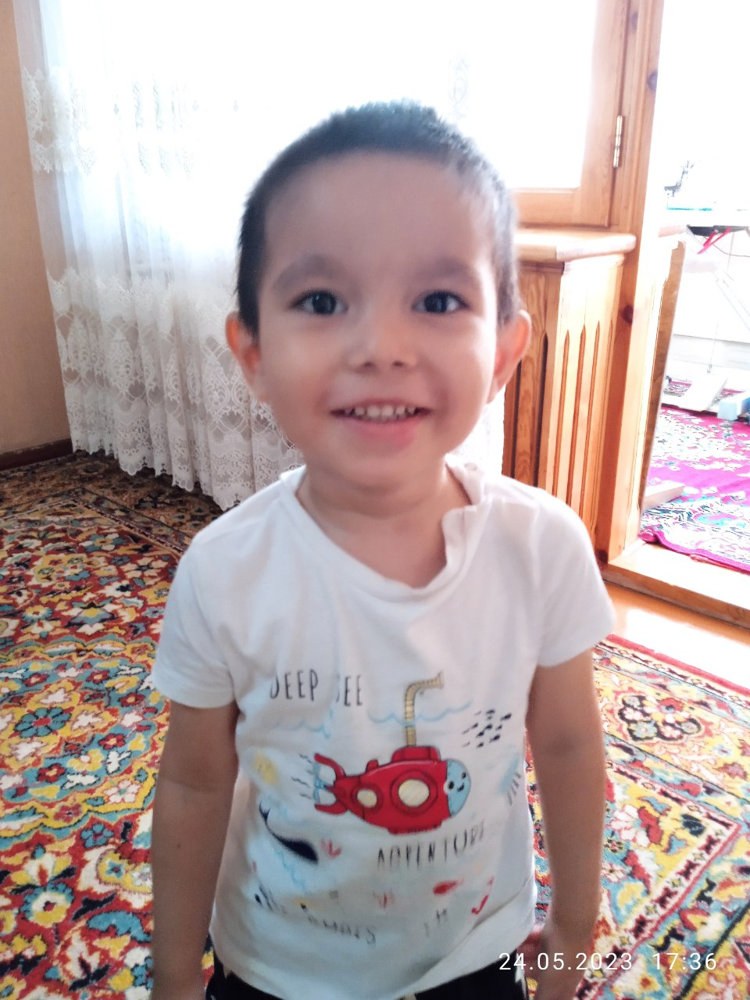

Bu men Mening ismim Azizbek. Men 11 yoshdaman. Men PDP JUNIOR ning
F9 gruppasida o'qiyman. Men katta
bo'sam programist bo'lmoqchiman.

Bu mening BUVIJONIM. Men ularni judayam yaxshi ko'raman. Mening BUVIJONIM 66 yoshlar. Ular shunchalik
shirin ovqatlar pishiradilarki, ular nafaqat qorinimni, balki qalbimni ham to'ydiradi. Men BUVIJONIM ni
yaxshi ko'raman.

Bu mening ONAM. Mening ONAM judayam chiroyli. Mening ONAJONIM 36 yoshlar. Ularning qalbi shunchalik toza
va mehrga boyki, ONAM bilan birga bo'lish doimo zavqli.

Bu mening ADAJONIM. Mening ADAJONIM 40 yoshlar Ularni men yaxshi ko'raman. Mening ADAJONIM himoyachim va
qahramonim. Men hayotda to'g'ri qaror qabul qilishni, jasur va mard bo'lishni ADAJONIM dan o'rganganman.

Bu mening katta ukam. Mening ukam 8 yosh. U bilan har bir lahza qiziqarli va unutilmas bo'ladi. Men uni
yaxshi ko'raman. Ukam kichik bo'lsa ham, maqsadlariga erishish uchun astoydil harakat qiladi. U bilan
vaqt o'tkazish doim zavqli va mazmunli bo'ladi.

Bu mening kichkina ukam. Mening ukam 4 yosh. Men uni judayam yaxshi ko'raman. Mening ukam xuddi kichik
farishta. Uning beg'ubor va samimiy ko'zlari oilamizga quvonch va tinchlik olib keladi. U nafaqat
oilamizning eng kichik a'zosi, balki eng katta baxtimizdir.